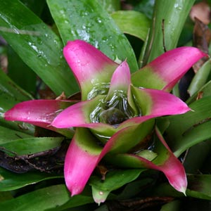

There are more than 2,700 species of bromeliads. One of the most well-known bromeliads is the pineapple. Bromeliads typically have bright red, orange, purple or blue flowers, and can grow in a number of different ways: they can be terrestrial, growing on the ground; saxicolous, growing on rocks; or epiphytic, growing on other plants and trees. Epiphytic bromeliads have the ability to absorb nutrients and moisture from the atmosphere, so they are sometimes called "air plants." Hundreds of these plants can grow on branches of tropical trees, sometimes causing the branches to break under their weight.
